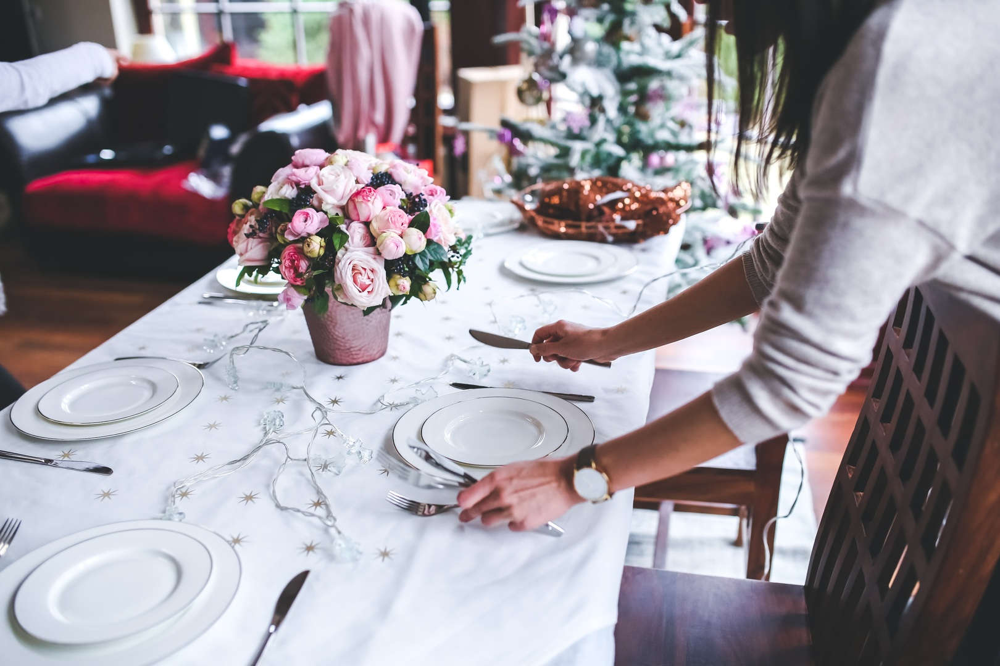
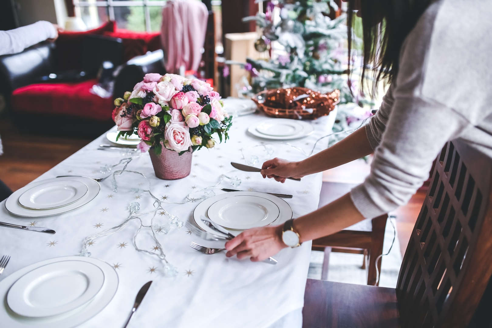
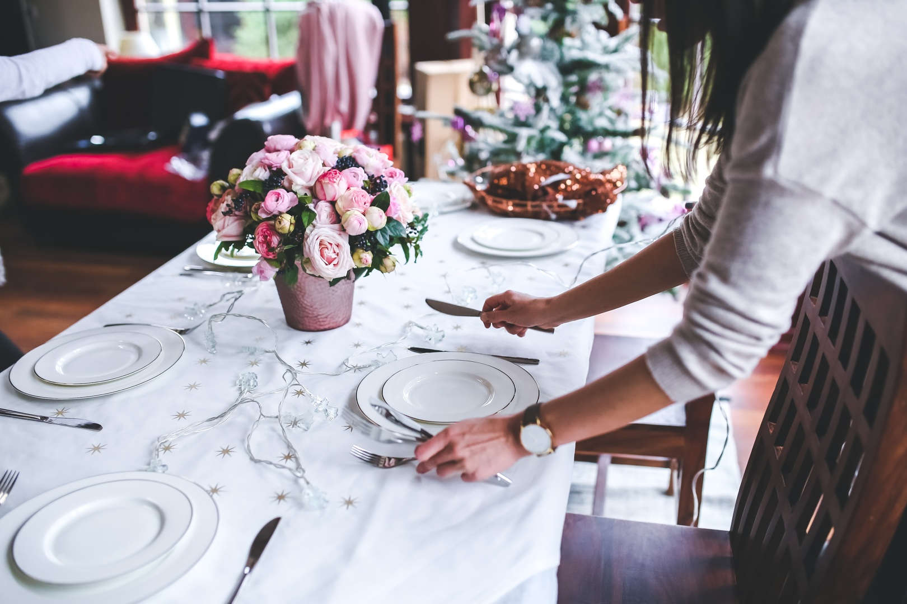
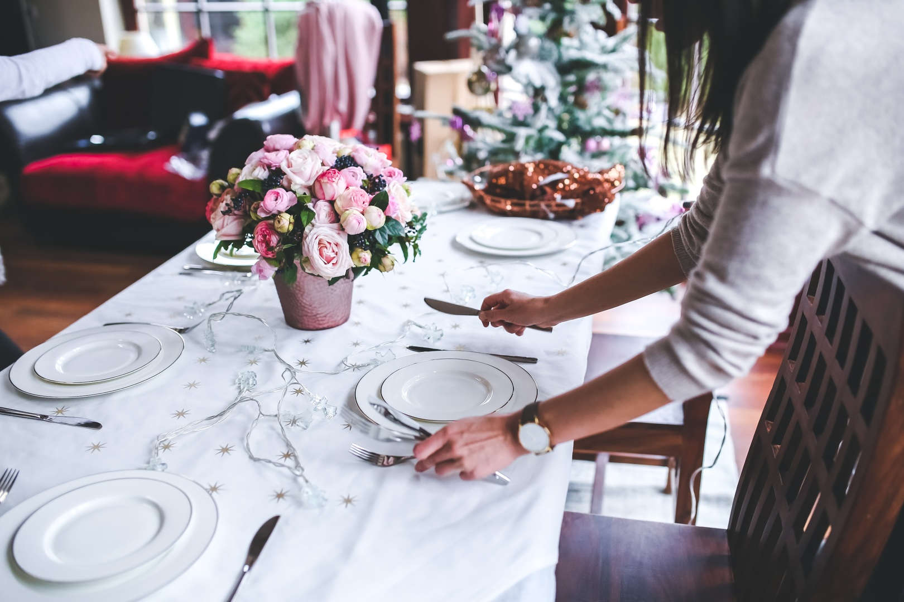

Tudo começou há 15 anos, quando decidimos abrir as portas do nosso primeiro restaurante. passamos por momentos difíceis, mas nunca perdemos a motivação para oferecer aos clientes uma experiência gastronômica tão agradável que fará você se sentir em casa. Nosso objetivo sempre foi criar um ambiente acolhedor e agradável, onde as pessoas pudessem se reunir para desfrutar de uma refeição deliciosa e de qualidade. Inspirados pela culinária regional, procuramos trazer para o nosso cardápio os melhores ingredientes e receitas típicas da região. Ao longo dos anos, tivemos o prazer de receber muitos elogios e reconhecimento de nossos clientes e da crítica gastronômica. Isso nos motiva a continuar trabalhando com paixão e dedicação, oferecendo sempre o melhor aos nossos convidados. Hoje, o Chalet Quatro Estações é um restaurante respeitado e consolidado na região, orgulhosos de fazer parte da história gastronômica da cidade. Esperamos ter a oportunidade de recebê-los em breve e compartilhar com vocês nossa paixão pela boa comida e hospitalidade.